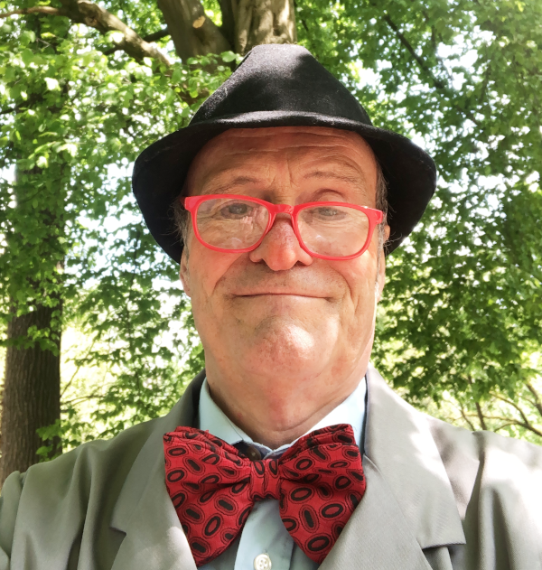

Walk-Acts
Ein Walk-Act ist das improvisierte Spiel mittendrin. Das kann bei Festen oder Geschäftseröffnungen sein, bei Geburtstagen, im Zoo oder einfach auf der Straße. Dabei bin ich nicht nur als Clown unterwegs: auch als Mafioso, Cowboy, Matrose oder Kameramann oder was weiß ich denn.
Wilhelm malt

Wilhelm malt draußen in der Natur, in der Stadt, im Park, überall dort wo er Menschen treffen kann. Er malt und zeichnet auf Pappe mit bunten Stiften. Und er verschenkt gerne seine Bilder, die er inspiriert durch den Kontakt mit Menschen immer wieder neu malt.
Organisierte Verunsicherung mit Köttel-Security
Wir sichern Ihre Veranstaltung unauffällig und zuverlässig ab und sorgen für Irritationen auf der ganzen Linie. Auszug aus dem Standardprotokoll zur allgemeinen Verunsicherung:
- Einlass mit Gesichtskontrolle
- Intelligenz-Schnelltest
- Gewichts- und Geruchskontrolle
- Taschenkontrolle
- und vieles mehr
Wir spielen auf:
- Messen
- Galen
- Trauerfeierlichkeiten
- Jubiläen
- Festivals
Köttel I ist Christoph Gilsbach
Köttel II ist Michael Westermeier
Polizist & Ganove
Wachtmeister Willi Kerkhoff - … ist hilfsbereit - dein Freund & Helfer - der Hüter des Gesetzes - immer bereit zu einer anständigen Ansprache
Kleinganove Didi Kowalski - … kommt ausm Pott - dealt mit Koks (Brausepulver) - bringt “Glückspillen” an Mann und Frau